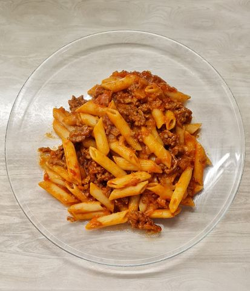

Macaroni with minced meat

Macaroni with minced meat, vegetables, and tomato paste
This comforting dish combines tender macaroni with a rich homemade sauce, delivering a harmonious blend of flavors and textures. The pasta is cooked to perfection and tossed in a savory mixture of freshly prepared minced meat, aromatic tomato paste, and carefully selected vegetables, including carrots, onions, and bell peppers. The result is a vibrant, hearty meal that warms both body and soul.
The star of this dish is the homemade sauce, made with premium tomato paste that adds a deep, rich flavor and a slightly tangy note. The minced meat and vegetables provide a satisfying protein boost and a colorful array of nutrients, making each bite a symphony of taste. This comforting pasta dish is perfect for family dinners or cozy evenings at home, appealing to both young and old with its hearty and satisfying nature.
Ingredients for 1 person
- 100 grams of elbow macaroni or penne
- 100 grams of mixed minced meat (pork and beef)
- 1 small carrot
- 1/2 small onion
- 1 small bell pepper
- 2 tablespoon of tomato paste
- 2 tablespoon of olive oil
- 50 grams of grated cheese
- Pinch of salt
- Pinch of black pepper
Steps for prepare macaroni
-
Boil the macaroni.
Fill a medium‑sized pot with water, bring it to a boil, add a pinch of salt. Add 100 g of elbow macaroni or penne and cook until al dente (follow the package instructions, usually 8–10 minutes). Once done, drain the pasta, rinse briefly with cold water to stop cooking, and set aside. Optionally, toss with a little olive oil to prevent sticking.
-
Prepare the vegetables.
While the pasta is cooking, dice 1 small carrot, finely chop ½ small onion, and mince 1 small bell pepper. Mince 1 clove of garlic.
-
Sauté the vegetables and meat.
Heat 2 tablespoons of olive oil in a frying pan over medium heat. Add the chopped onion and garlic, sauté for 1–2 minutes until fragrant. Add the diced carrot and bell pepper, cook for another 3–4 minutes until the vegetables start to soften.
-
Cook the minced meat.
Add 100 g of minced meat to the pan. Break it up with a spatula and cook until browned and fully cooked through (about 5–7 minutes). Stir occasionally to avoid clumping.
-
Make the sauce.
Add 2 tablespoons of tomato paste to the pan. Stir well to combine it with the meat and vegetables. Cook for 1–2 minutes to caramelize the tomato paste slightly — this enhances the flavour.
-
Season the sauce.
Sprinkle in 1 teaspoon of Italian herbs or dried basil, plus salt and black pepper to taste. If the mixture seems too dry, add about ⅓ cup (80 ml) of water or vegetable broth to reach your desired sauce consistency. Simmer for 2–3 minutes to let the flavours meld.
-
Combine pasta and sauce.Add the cooked macaroni to the pan with the meat‑vegetable sauce. Stir thoroughly to ensure the pasta is evenly coated.
-
Add cheese and finish.Remove the pan from heat. Sprinkle 50 g of grated cheese (such as Gouda or Parmesan) over the top. Gently stir or leave it on top to melt slightly from the residual heat.
-
Serve.
Transfer the dish to a plate. Garnish with fresh parsley or basil (if using) and serve hot.
Home